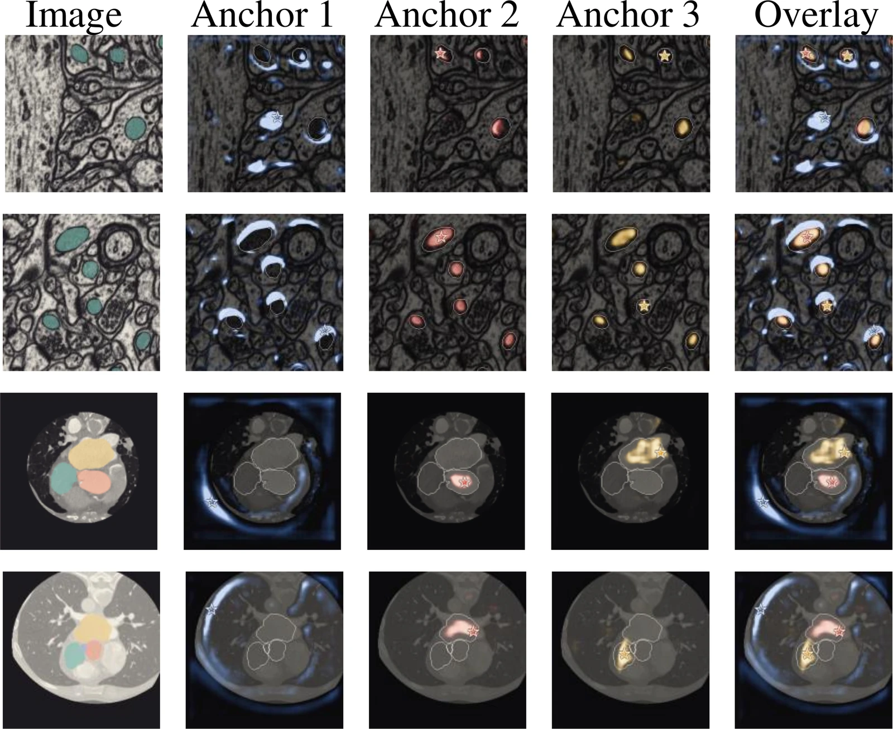

1 School of Information Science and Technology, University of Science and Technology of China 2 Shenzhen International Graduate School, Tsinghua University * Corresponding author
Illustrative values. Each class gets its own increasing change of similarity, so a fixed threshold keeps a different share of each class, while the order of a pixel's anchors does not move.
24/24
settings where RIDA has the best Dice or F1
+3.09
Dice over the strongest competitor, cross-modality average
+1.17
F1 over the strongest competitor, electron microscopy average
12
recent UDA methods, reproduced on the same three backbones
0
extra cost at inference: anchors and rankings are dropped
Overview
Supervise the target domain with order, not with values
RIDA describes every pixel by the order in which it resembles a few anchors, and builds all supervision for the unlabeled target domain on that order instead of on magnitudes such as confidence.
Biomedical domain shifts change the imaging process but not the imaged structures: the same tissue may appear bright in one domain and dark in another, yet the relative resemblance among structures is largely preserved. Current unsupervised domain adaptation (UDA) methods supervise unlabeled target images with magnitudes such as prediction confidence, which shift by class-dependent amounts and admit mistakes that self-training reinforces.
We propose Rank-Invariant Domain Adaptation (RIDA), which describes each pixel by its ranking of a few anchors and constructs all target supervision from these rankings. Rank consistency trains each target pixel to keep the pairwise comparisons that the weak view separates clearly. Rank matching labels target pixels by comparing their rankings with class signatures built from labeled source pixels. Rank-stable self-training weights teacher pseudo-labels by the fraction of these comparisons that keep their order across views, instead of by confidence.
On eight electron microscopy and cross-modality transfer tasks with three backbones, RIDA achieves a higher Dice or F1 score than 12 recent UDA methods in all 24 settings.
Eight transfer tasks × three backbones
Medical · organs
Abdomen
CHAOS T2-SPIR MR and BTCV CT. Liver, right and left kidney, spleen.
MR→CT · CT→MR
Medical · heart
MM-WHS
Ascending aorta, left atrium and left ventricle blood cavities, myocardium.
MR→CT · CT→MR
Biological · EM
VNC III → Lucchi
Drosophila ssTEM to mouse hippocampus FIB-SEM mitochondria.
Subset 1 · Subset 2
Biological · EM
MitoEM
Rat and human cortex, multi-beam SEM mitochondria.
R→H · H→R
Backbones: U-Net trained from scratch, DINOv3 ViT-L/16, and MedSAM ViT-B with LoRA adapters.
Motivation
Same anatomy, different physics
A biomedical domain shift changes the imaging process. CT records X-ray attenuation and MR records proton relaxation; in electron microscopy, contrast depends on the microscope, the staining protocol and the specimen preparation. The same structure can therefore look bright in one domain and dark in the other, and the magnitudes of feature similarities move by amounts that differ from structure to structure.
The two domains still contain the same structures. Whichever microscope acquires the image, a pixel inside a mitochondrion resembles other mitochondrial pixels more than cytoplasm. In both CT and MR, a pixel in the left ventricle blood cavity resembles that cavity most, the neighbouring left atrium less, and the background least. A biomedical shift should change the magnitudes of these similarities but largely keep their order.
Most UDA supervision reads magnitudes. Self-training keeps pseudo-labels whose confidence passes a threshold or weights them by confidence; distribution alignment assumes that a value means the same thing in both domains once the distributions match. Confidence is poorly calibrated in deep networks and gets worse under shift, so on the target domain a confident mistake passes the gate, and the model that made it then learns from it.
The same structures in two domains. In natural images both domains are formed by visible light; in medical and biological images the same tissue can invert its contrast across modalities or species.
What changes when supervision is built on order
Magnitude-based self-training
RIDA
Which pseudo-labels are used
Confidence above a threshold \(\eta\), or weighted by confidence
Weighted by rank stability \(s\): the share of trusted anchor pairs that keep their order from the weak to the strong view
How source labels reach the target
Prototypes or class means compared by value
Class signatures, the average source ranking of each class, compared by rank correlation
Consistency between views
Values or softmax distributions over correlations
The sign of each similarity gap, on pairs that the weak view separates clearly
Unchanged by
Little beyond a global rescaling
Any increasing change of a pixel's similarities, whatever its size and whatever its class
Method
Three losses, one invariant
RIDA keeps the teacher–student scheme of self-training. The teacher, an exponential moving average of the student, reads a weakly augmented view of each target image; the student reads a strongly augmented view of the same image. RIDA replaces the confidence-thresholded self-training loss with three losses built on rankings.
Overview of RIDA. (a) Rank matching labels a target pixel with the class whose signature best matches its ranking against the source anchors, weighted by the margin \(m\). (b) Rank consistency trains the strong view to keep the order of the weak view on trusted pairs of target anchors. (c) Rank-stable self-training weights the teacher's pseudo-labels by the fraction \(s\) of trusted pairs that keep their order. Click to enlarge.
Anchors and rankings
RIDA represents the main structures of the images by a few pixels, the anchors \(A=[a_1;\dots;a_K]\), and describes each location \(u\) with unit-length feature \(f_u\) by its similarities and its ranking:
The most similar anchor gets rank \(K\). A ranking stays the same when the similarities rise or fall, even by amounts that differ across pixels and classes, as long as their order is kept. Anchors are selected orthogonally: each new anchor is the pixel whose largest similarity to the anchors already chosen is the smallest, so anchors cover different structures and rarely tie.
Selected in each target image from the weak view, starting at a random pixel, and shared with the strong view. Both views of a pixel are ranked against the same references, without any label.
Source anchors
Selected on labeled source pixels, with an equal share of the \(K\) anchors per class so that a mitochondrion is represented as finely as the background. They follow the teacher features by online spherical \(k\)-means.
Order-preserving shift
A shift is order-preserving if, for every class, the rankings of its pixels against the source anchors follow the same distribution in both domains. Similarities may still change by class-dependent amounts.
At inference
Anchors, signatures and rankings are discarded. The trained network runs alone, at the cost of its backbone.
(b) Within the target · \(\mathcal{L}_{rc}\)
Rank consistency
A ranking is fixed by the signs of its pairwise gaps \(g_{kl}=r_k-r_l\). A pair is trusted when the weak view separates it by more than \(\delta\), the \(q\)-quantile of the weak-view gaps in the batch. The strong view learns the sign of each trusted pair through a sigmoid on the same scale.
Target: a distribution over permutationsthe sign of each trusted gap
(a) Across domains · \(\mathcal{L}_{rm}\)
Rank matching
Each class \(c\) is summarized by its signature \(\mu_c\), the mean ranking of its labeled source pixels against the source anchors. A target pixel takes the class whose signature best matches its ranking, weighted by half the margin \(m\) between the two best matches. No target pseudo-label enters the signatures.
Labels from: prototypes compared by valuesignatures compared by order
(c) Checking the teacher · \(\mathcal{L}_{rs}\)
Rank-stable self-training
The teacher still labels each pixel from its features and spatial context, which matters near class boundaries. Its pseudo-label is weighted by rank stability \(s\), the share of the pixel's trusted pairs that keep their sign from the weak to the strong view, gated at \(s_0\).
One pixel, six anchors. Move the sliders to see which pairs are trusted, which flip under strong augmentation, and how the pixel's pseudo-label weight follows. The quantile here is taken over this pixel's 15 pairs; RIDA takes it over the batch.
Rank consistency and rank stability
trusted, order kepttrusted, order flippednot trusted (gap ≤ δ)
δ–
Trusted pairs–
L_rc on pixel–
Stability s–
Weight w (s₀ = 0.8)–
Confidence (η = 0.9)–
Rank matching
Label–
Margin m–
Weight m / 2–
The shift raises every similarity of the pixel to the power γ. Its values change, its ranking does not, so the correlations, the label and the weight stay where they are.
\(\mathcal{L}_{sup}\) is cross-entropy plus soft Dice on labeled source images. The three components check one another: rank stability reuses the gaps and trusted pairs of rank consistency at almost no extra cost, and rank matching supplies class information that never passes through the model's own target predictions.
All main experiments use \(K=32\) anchors, \(s_0=0.8\) and \(\zeta=0.1\). The quantile \(q\), the loss weights and the schedule of each setting are given in its configuration in the code release.
Training procedure
Warm up the student with \(\mathcal{L}_{sup}\); initialize the teacher from it.
Select the source anchors \(A^S\); initialize the signatures \(\{\mu_c\}\).
Sample a labeled source batch and an unlabeled target batch.
Compute \(\mathcal{L}_{sup}\); update \(A^S\) by online \(k\)-means and \(\{\mu_c\}\) by a moving average.
Encode the weak view with the teacher and the strong view with the student.
Rank consistency
Select target anchors on the weak view; compute \(\delta\), the trusted pairs \(\mathcal{T}\) and \(\mathcal{L}_{rc}\).
Rank matching
Correlate weak-view rankings with \(\{\mu_c\}\); take labels and margins; compute \(\mathcal{L}_{rm}\).
Rank-stable self-training
Compute \(s\) and \(w\) from the trusted pairs; compute \(\mathcal{L}_{rs}\).
Update the student with \(\mathcal{L}\) and the teacher by EMA; repeat from step 3.
Theory
Why rank labels transfer
The target error of rank matching depends on how the shift reorders the anchors, and not on how far the similarity values move.
Lemma 1
The margin is a reordering budget
Let \(d(\pi,\pi')\) count the anchor pairs that two rankings order differently, each weighted by how clearly the signature separates its two anchors. If
\[ d(\pi,\pi') \lt \tfrac{1}{2}\,m(\pi) \]
then \(\hat y(\pi')=\hat y(\pi)\): a label survives any reordering smaller than half its margin. This is why rank matching weights each label by its margin.
Theorem 1
Target error of rank matching
Let \(W_c\) be the smallest average weighted reordering over all pairings of source and target rankings of class \(c\), \(\varepsilon_S^{\kappa}\) the share of source pixels that rank matching misclassifies or labels with margin at most \(\kappa\), and \(\omega^S,\omega^T\) the class proportions. For every \(\kappa>0\),
The bound has the familiar shape of domain adaptation bounds, but its discrepancy counts only reorderings. Under an order-preserving shift \(W_c=0\), and no term measures how far the similarity values move.
Proposition 1
Order agreement bounds the signatures
Define the order agreement of class \(c\), which needs no paired images:
It can be measured on any transfer task with a few annotated target images, and a high order agreement keeps the signatures that rank matching compares.
Corollary 1
Swapping signatures
Replacing target signatures by source ones changes a label only where its margin is below \(2\max_c e_c\), with \(e_c\) the distance between the normalized signatures:
Swaps between nearly tied anchors cost almost nothing, because a reordered pair counts only as much as the signature separates it. A larger \(\kappa\) counts more source labels as fragile but lets each label absorb more reordering.
Results
Best in all 24 settings
Every competing method keeps its own losses, modules and hyperparameters and is reproduced on the same three backbones as RIDA. Cross-modality tasks report 3-D Dice and ASSD; EM tasks report F1 and MCC (mAP and IoU in the per-class view).
RIDA against the strongest competitor of each setting
Dice (%) for cross-modality tasks, F1 (%) for EM tasks. Hover a row for details.
Strongest competitor (seed 42)RIDA (seed 42)RIDA, mean ± 1 sd over 3 seeds
Margins range from 0.27 to 10.31 points. Averaged over backbones, the margin is largest on MM-WHS CT→MR (5.86 Dice) and smallest on MitoEM R→H (0.52 F1). Over three seeds, the RIDA mean minus one standard deviation stays above the strongest competitor in all 24 settings.
Benchmark explorer
All 13 methods on one setting.
RIDAStrongest competitorOther competitorsOracle (trained on target labels)Source-only
Per-class results
The gains come from most classes. On the cross-modality tasks RIDA has the best or second-best Dice on 39 of the 48 class-level entries; its largest gains are on the left atrium blood cavity of MM-WHS CT→MR, where it exceeds the best competing result by more than 13 Dice with every backbone. Cell shading follows the value within each column; bold is best and underline second best, oracle excluded.
A natural-image reference: GTA5 → Cityscapes
Per-class IoU with a MiT-B5 encoder and the DAFormer decoder
RIDA 69.87 mIoU, MIC 69.54, DAFormer 68.31, source-only 42.11, oracle 77.21. RIDA is the best on 11 of 19 classes.
DAFormerMICRIDAOracle
RIDA was designed for biomedical shifts, where the imaged structures stay the same. On a synthetic-to-real street-scene shift, which also changes the scene content, it stays on par with the strongest natural-image method.
Analysis
What the model sees
Predictions of the released checkpoints
Anchors
Source anchors of one class. Similarity maps of three source anchors (stars) of mitochondria (top two rows) and the myocardium (bottom two rows), and their overlay. Orthogonal selection represents a class by complementary parts, such as different segments of the myocardial wall.

Target anchors, selected without labels. Similarity maps of three target anchors (stars) in EM (top two rows) and MM-WHS (bottom two rows), and their overlay. They separate the background from different structures of the image.
Training cost
Training time per iteration and peak GPU memory on MM-WHS MR→CT. RIDA adds a moderate overhead over confidence-thresholded self-training, comparable to other recent methods.
At inference the anchors, signatures and rankings are discarded, so a RIDA model costs exactly as much as its backbone.
Protocol
How the numbers were obtained
Backbones
U-Net with 32 base channels, trained from scratch. DINOv3 ViT-L/16 (LVD-1689M) with features of blocks 5, 11, 17 and 23 fused by a light convolutional decoder and its last four blocks fine-tuned. MedSAM ViT-B at 512 × 512 with LoRA adapters and the same decoder.
Evaluation
Following DA-ISC and R4MITO, every method is evaluated at the checkpoint with the best Dice (cross-modality) or F1 (EM) during training, and all metrics are computed at that checkpoint. All methods use seed 42; RIDA is also reported over three seeds. The oracle uses target labels with the same backbone.
Competitors
Natural-image UDA: DAFormer, MIC, ECOCSeg. Medical UDA: DDS-UDA, DDFP, AP, CAUDA-MI, WFE-LPFN, SHAPE. Biological UDA: DA-ISC, CAFA, R4MITO. Training uses Adam on eight NVIDIA RTX A6000 GPUs.
Code and checkpoints
Reproduce any of the 24 settings
Each setting is one configuration, configs/rida/<backbone>/<benchmark>_<direction>.yaml, trained end to end with one command. One RIDA checkpoint per setting is on Hugging Face.
Install
conda create -n rida python=3.11 -y
conda activate rida
pip install torch==2.5.1 torchvision==0.20.1 \
--index-url https://download.pytorch.org/whl/cu124
pip install -r requirements.txt
Download the checkpoints
huggingface-cli download jiajianihao/RIDA \
--local-dir checkpoints --include "rida/*"
# checkpoints/rida/<benchmark>/<backbone>_<direction>.pth
bash scripts/data/check.sh # verify the data layout
python tools/test.py configs/rida/unet/cardiac_ct2mr.yaml \
checkpoints/rida/cardiac/unet_ct2mr.pth
bash scripts/test/all.sh # every released checkpoint
Citation
BibTeX
@misc{chen2026rida,
title = {A Universal Rank-Invariant Domain Adaptation Method for
Biomedical Image Segmentation},
author = {Chen, Yujia and Sun, Rui and Wang, Yuan and Zhang, Tianzhu
and Luo, Naisong and Wu, Feng},
year = {2026},
howpublished = {\url{https://github.com/jj-ccc/RIDA}}
}